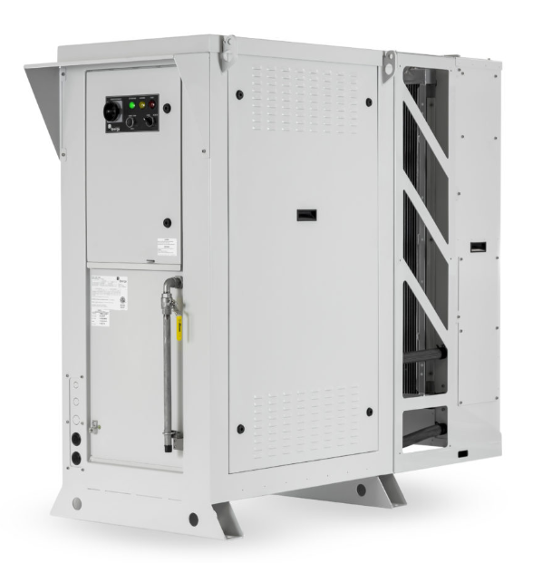

Qnergy is partnering with leading natural gas producers in North America to reduce the amount of methane emitted from bleeding (leaking) pneumatic devices, such as controllers and chemical pumps. Because the pneumatic devices are off-grid or connected to a weak or intermittent power grid, many of them are powered by compressed natural gas, resulting in methane emissions. Qnergy’s PowerGen technology provides reliable electrical power to remote locations, allowing the devices to be powered by instrument air (clean supply of compressed air) rather than compressed natural gas, which prevents methane leaks.
The PowerGen remote power generator uses a Free-Piston Stirling Engine (FPSE) to provide a reliable, low-maintenance electrical power supply, even in extreme temperatures and harsh environments. The system works with a variety of fuel supplies, including natural gas, propane, ethane, biogas, and multiple associated gas streams.

Qnergy’s PowerGen remote power generator
Since summer 2019, Qnergy has deployed 10 compressed air systems, powered by PowerGen remote power generators, that abate methane emissions. Each installed unit is expected to reduce approximately 450 tons of carbon dioxide equivalent per year. Qnergy is also continuing to develop additional systems.